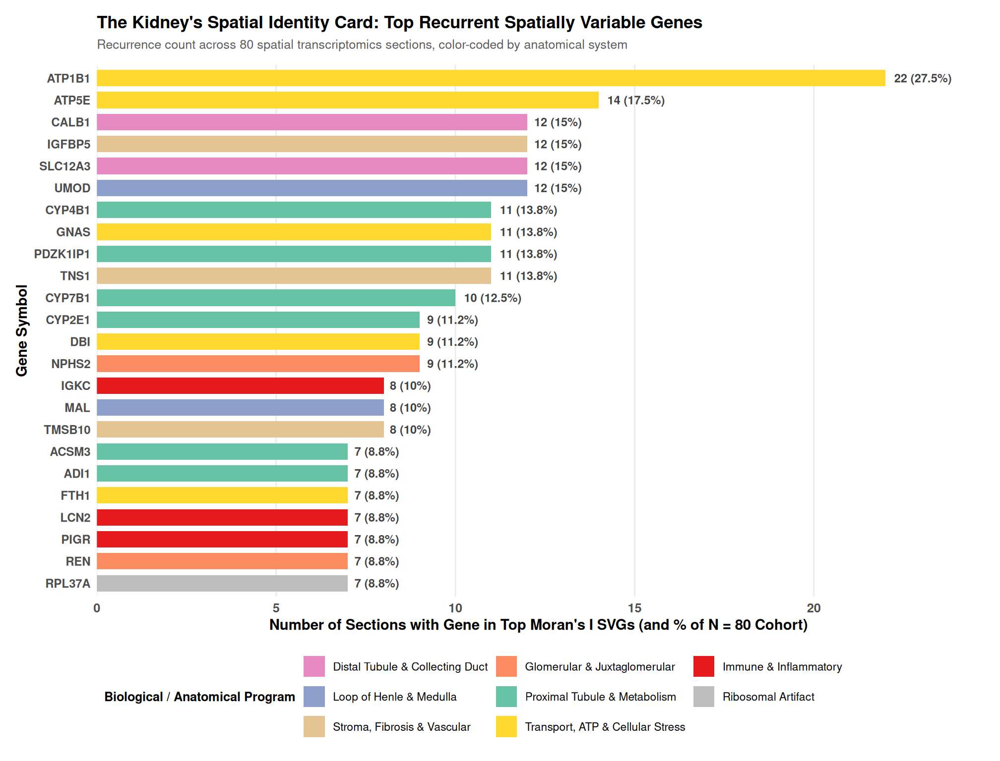
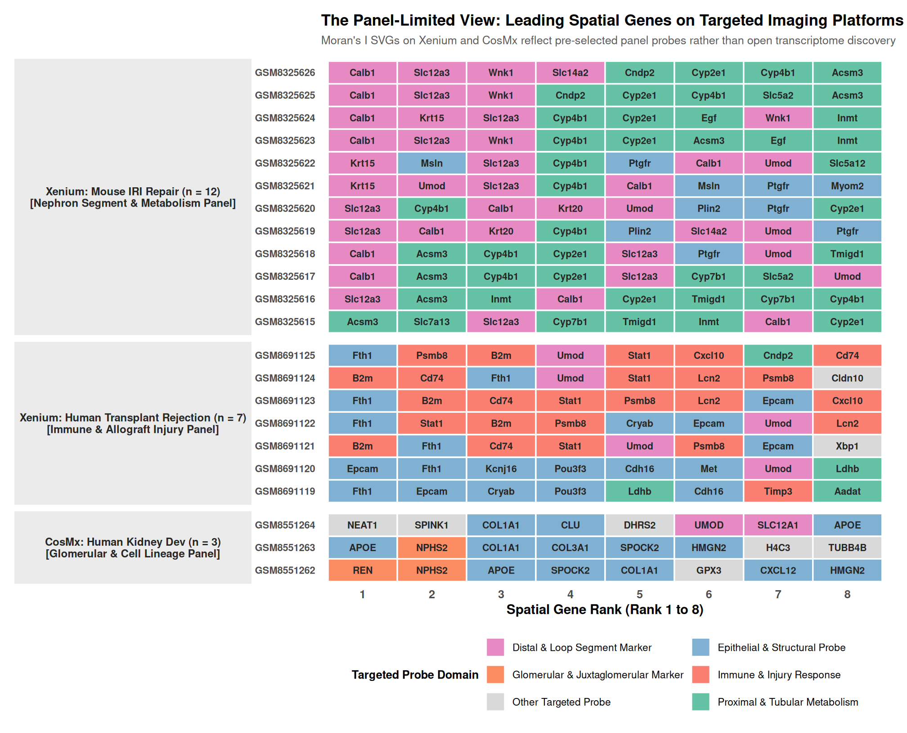

Some genes are expressed everywhere; some are expressed where they are needed. The kidney is an organ whose function is written in the second kind: a transporter on the segment that transports, a hormone in the cells that secrete it, a metabolic enzyme along the gradient where the work happens. This chapter measures that spatially variable program across all five platforms, using Moran’s I on the whole-transcriptome sections and, where the data can support it, on the targeted panels.

Read the top spatially variable genes across the cohort and they read like the kidney’s table of contents: REN (renin, the juxtaglomerular apparatus), NPHS2 (podocyte), UMOD and SLC12A1 (loop of Henle), Slc12a3 and Calb1 (distal tubule), MAL (medullary), S100A8/S100A9 (immune), PDZK1IP1 and SLC3A1 (proximal tubule). The genes with the strongest spatial pattern in the kidney are the genes that define where each nephron function happens. Moran’s I is not picking genes by chance; it is picking out the anatomical program.
Moran’s I is a spatial autocorrelation statistic: for each gene, it asks whether nearby units carry similar expression more than chance would produce, with a permutation test to calibrate the null. Applied to a section’s transcriptome, it ranks genes by how strongly their expression pattern follows space. The genes at the top of that ranking are the ones whose biology is literally placed in the kidney, which is why I read them as the organ’s spatial identity.
Among the top spatially variable genes, metabolic enzymes recur across the sections: Pck1, Gatm, Cyp7b1, Sdhc, Hao2, Dbi, Slc27a2. These mark the cortex-to-medulla metabolic gradient, the zonation in which the outer medulla does its work in an oxygen-poor environment. This is the molecular scaffold on which the injury story of Chapter 7 sits: the S3 segment is vulnerable because of where it sits on this metabolic map. The spatially variable program is the reason the kidney is spatially fragile, not a background feature.
Not every top Moran’s-I gene is biology. On some whole-transcriptome sections, ribosomal protein genes (RPS27, RPL32, RPL37A) top the list. This is a known property of Moran’s I on raw expression: highly expressed, housekeeping genes can carry spurious spatial autocorrelation. The framework does not hide it. I report it here and in the per-sample tables, so that no reader mistakes a ribosomal artifact for a finding. On the sections where it appears, the genuine program (immune markers like S100A8/9, or segment genes) sits among the ribosomal genes, and the two must be separated when the list is read.
The mechanism is straightforward: Moran’s I operates on expression magnitude, and highly expressed, broadly distributed genes such as ribosomal proteins can carry spurious autocorrelation because their raw counts are large in most units. I report the artifact in the same tables where it appears rather than filtering it out silently, so one sees both the artifact and the genuine program sitting around it.

The imaging platforms can compute spatial autocorrelation, but only over the genes their panels measure. The Xenium panel’s leading spatial genes (Slc12a3, Calb1, Umod, Acsm3, Cyp7b1) are the segment and metabolic genes the panel was designed to capture, and they are genuinely informative. But the panel cannot see what it does not measure: no Lcn2 on the Xenium IRI sections, no renin-podocyte discovery on the panel arms. This is the panel-limited ceiling, and it is why the whole-transcriptome arms carry the discovery burden in this analysis. On Xenium and CosMx the testable gene universe is the panel itself and nothing more: the spatial autocorrelation is computed only over the genes the panel measured. The ceiling is not an oversight; it is the definition of a targeted panel.
What the spatially variable program establishes is a unifying fact: the kidney’s spatial identity is readable on every platform that can see the genes, in the form of its segment, hormonal, and metabolic programs, and the program itself is the scaffold of the organ’s spatial biology, including its vulnerability.